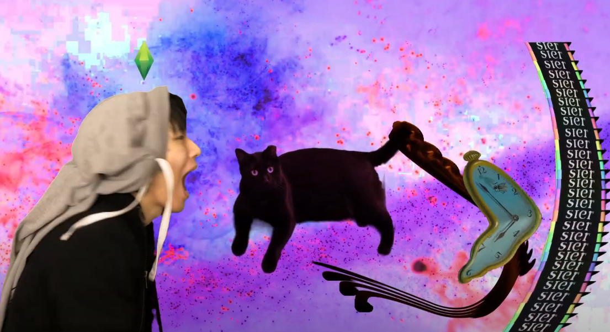
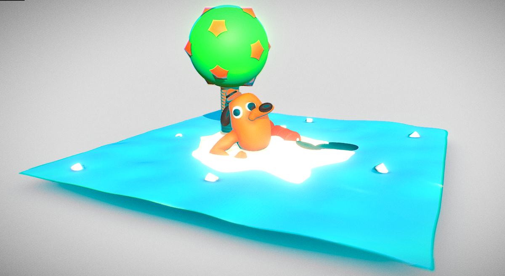
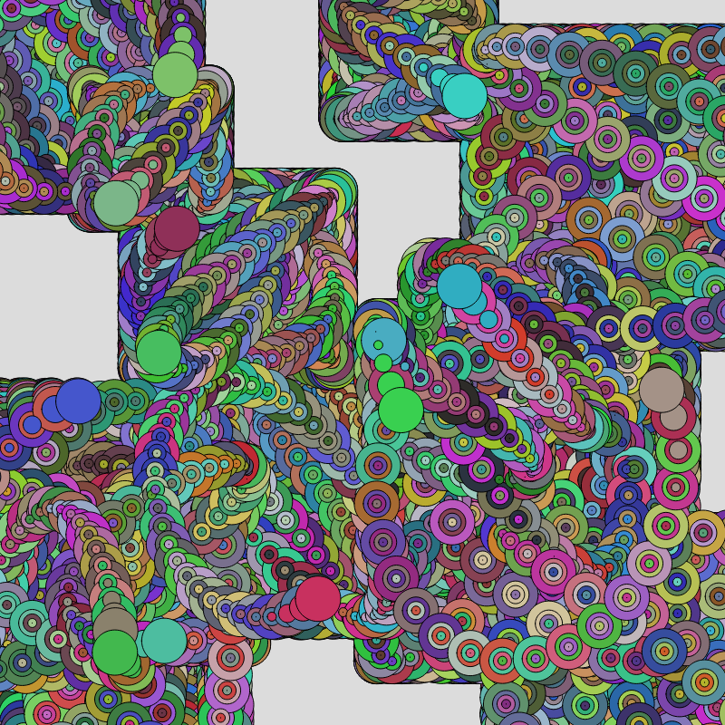
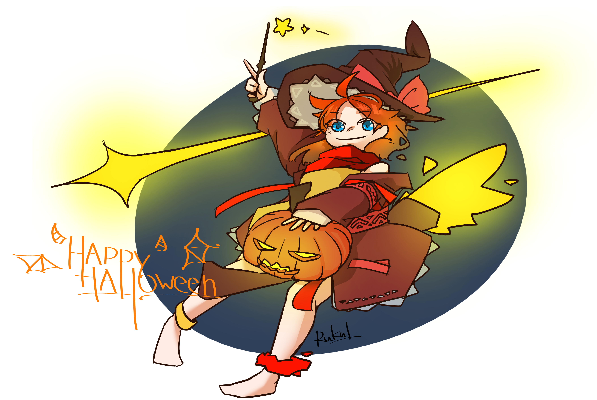

Works that I'm REALLY proud of ...
See all my works in 'All Work' tab

Name: 2024
Medium:Photoshop, ClipStudioPaint
Dimension: 3847x6600
DESCRIPTION:
A introductory project to glitching.
2024 is inspired by announcement of NASA deciding to launch another lunar mission by the year 2024.
I want to create a poster documenting mankind's achievement in space exploration. The poster includes rocket designs and blueprints from the NASA, Interkosmos (Soviet space agency), and SpaceX.
Meanwhile, the center-pieces is a rocket that incoprated rocket component from all of these agencies/companies. The first section was inspired by SpaceX's Starship,
the center section was inspired by NASA's Saturn V, and the last section was inspired by the Soviet's Soyuz. The united design signifies space exploration being a human achievement.
Full Image

Name: Majo
Medium: Clip Studio Paint
Dimension: 3508x2480
DESCRIPTION:
魔女 (Romaji: majo, English: Witch) is a piece was created during winter break. The pieces
was heavily influenced by Japanese animation style of drawing (as most of my digital illustrations are inspired
by Anime). It started as anatomy practice, developed into a charater protrait, and subsquently a part of a world-building
project. The goal of this pieces is to personificate madness and heresy. Of course, also trying to draw something cute.
Full Image

Name: Human (Collage Glitched)
Medium: Photoshop
Dimension: 1200x1200
DESCRIPTION:
Human is a variation of the Hyperrealism Collage. It was processed with different layer property. The resulting juxaposition is both
familiar yet disconnecting. From afar, the image resemble a human face, abeit a little distorted, but at a closer look, the overlapping texture creates a uncanny
feeling to it. For this image, I want to create an imagery with something we all familar with and disconnect that familarity through manipluation. I used the hyperrealism drawing because
it also draws to the same idea of disconnect; despite it realism and attention to detail, it's still a drawing.
Full Image

Name: Dream have meanings," meanwhile:
Medium: After Effect, Premiere
Dimension: 1080p; 1 minute 50 seconds
DESCRIPTION:
>> Video Link <<
This weird video was a result of a playful session of brainstroming. The project was inspired that shares the same title and basic
idea. I was related to that idea that dream often has no meaning to such a extend that I produced my own verison of that meme. I want to express
that the idea mythical/super-nature connection of dream and future are absurd and psudo-scientific. I decide to express that absurdity throught
a silly fun video with heavy artificiality. The video taken on my phone and
processed with After Effect and Premiere for audio design.

Name: Low Sanity
Medium: Adobe Illustrator, ClipStudioPaint
Dimension: 2376x2994
DESCRIPTION:
A self-portrait of the moment. I was dealing with an episode of anxiety attack. I was feeling depressed and powerless. I felt like whatever I had created had no value because I can not find any value in anything.
I created this work to cope with my depression. The process calm me down, allow me to walk myself out of the mud, and continuing on.
Full Image

Name: Gradian Mesh
Medium: Adobe Illustrator
Dimension: 1200x1200
DESCRIPTION:
Another practice piece with Adobe Illustrator. The piece is a formal exploration of shapes and gradians of hue. The goal was to create
an aesthetically appealing image. The forms are inspired by articulations of flora and flow of water.
Full Image

Name: The Corona Situation
Medium: Meshmixer
DESCRIPTION:
>> SketchFab link (Fully interactable 3D model) <<
This 3D sculpture was made in the start of the COVID-19 lockdown. It was created to represent my experience
of the lockdown. The center-piece of the sculpture was inspired by the popular internet "This is Fine" meme, which depict
an apathic anthropomorphic dog sitting surround by the fire (https://knowyourmeme.com/memes/this-is-fine).
During that time, I shared the same sentiment as the dog depicted in the meme: feeling that the world is ending.

Name: Interactive Randomness powered by Trig
Medium: p5.js
Dimension: 800x800
DESCRIPTION:
Interactive Randomness powered by Trigonometry, or IRT in short, was created as an assignment for ART 74.
The idea was to create a tool where with a few interaction, everyone can create their unique computer generated art.
As the name suggest, the motion of the geometries is derived from basic Trig. By using randomly generated number as variable, the
code can generated varying size of shape at a different speed.
The main goal of this code art is to created a vibrant chaotic yet controlled image. The chaos coming from the randomness and
viewer interaction, whereas the controlled-ness comes from the limitation of the Trig function: No matter how random the variables are, the final
shape always ends with a square.
INSTRUCTION:
Press MOUSE to create shape,
Press ANY_KEY(not space) to generate madness,
Space is PAUSE
Screenshot at any moment you want.
Try it out yourself (Source Code Included)

Name: Happy Halloween 2020
Medium: Clip Studio Paint
Dimension: 4215x2827
DESCRIPTION:
A witch celebrating the 2020 Halloween. I was also testing a simplier coloring style on this drawing with only three layer color (one for shadow, one for hue, and one for highlight).
Full Image

Name: Mushroom
Medium: Audacity, Photoshop
Dimension: 1200x791
DESCRIPTION:
This is one of the two-pieces series of glitch art Mushrooms.
I create this two pieces Through the use of text- and audiowave-manipluation. The trippy and abstract nature of both images allude to psychedelic effect of Psilocybin (magic mushroom)
, or in general, the usage of drugs. The original image of the mushroom is appropriated from the net
Full Image